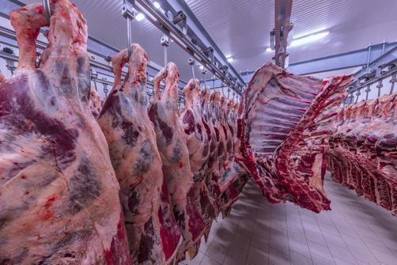

|
|
|||
| Accueil | Transformation | Contact | Idées et Débats |
L'industrie de la viande désigne l'ensemble des activités industrielles agroalimentaire spécialisées dans la transformation des animaux d'élevage dévolus à l'alimentation humaine. Cela va de l'abattage-découpe-stockage des animaux devenant carcasses bouchères à la viande prête à cuisiner et autres plats cuisinés à base de viande. Il existe differentes facons de transformer et de conserver la viande:
* Transformation et conservation de la viande de boucherie ː les abattoirs, la production de viandes de boucherie, fraîches, congelées ou surgelées, soit en en carcasses soit en morceaux.
* transformation et conservation de la viande de volaille ː les abattoirs ; la préparation et l'emballage de volailles ; la production de viandes de volailles, entières ou en portions individuelles, fraîches, congelées ou surgelées ; l'extraction de graisses de volailles comestibles ; la production de plumes, de peaux et de duvets, bruts et apprêtés ; la préparation des abats.
* préparation de produits à base de viande ː la fabrication industrielle de produits à base de viandes ou d'abats (pièces salées, fumées, séchées, cuites, etc.) ; la fabrication industrielle de charcuteries telles que pâtés, rillettes, saucisses, salamis, boudins, andouillettes, cervelas, mortadelles, galantines, jambons cuits ; la préparation de foies gras ; la production de farines et poudres de viandes comestibles ou impropres à l'alimentation humaine.



|
|---|